El misterio
Obra de civilizaciones antiguas o de otros mundos, como las líneas de Nasca en Perú.
Obra de civilizaciones antiguas o de otros mundos, como las líneas de Nasca en Perú.
Geólogos dicen que la naturaleza, erosión, viento, agua y sol moldeó la piedra con los años.
Las figuras se repiten: formas humanas y de animales talladas en piedras de río, casi todas.
El sitio denominado "Padre Rumi" ubicado en las estribaciones de la cordillera occidental, en la parroquia Jerusalén perteneciente al cantón Biblián, a una altura aproximada de 3.800 msnm. De encanto y belleza natural impresionante. Son formaciones rocosas que presentan innumerables formas llevan a imaginar y pensar la razón de ser de este colosal monumento de piedra.
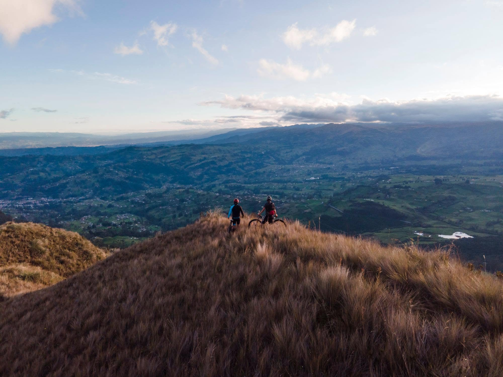
Área de gran biodiversidad y reserva hídrica
De las formaciones y del paisaje andino
Buscar especies sin alterar su hábitat
Compartir llevando de regreso todos los residuos para no contaminar el ecosistema
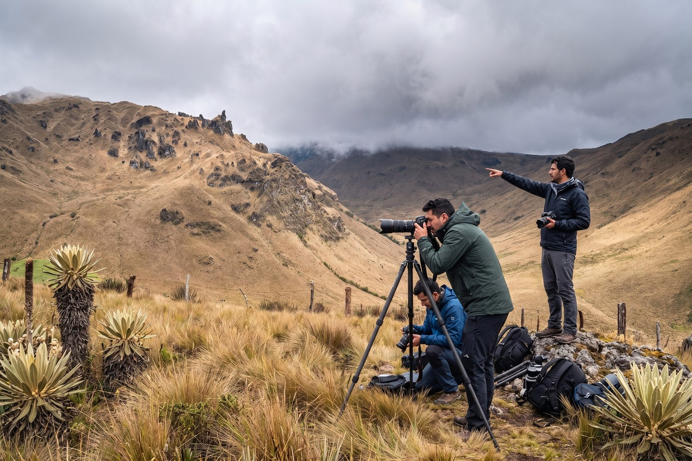
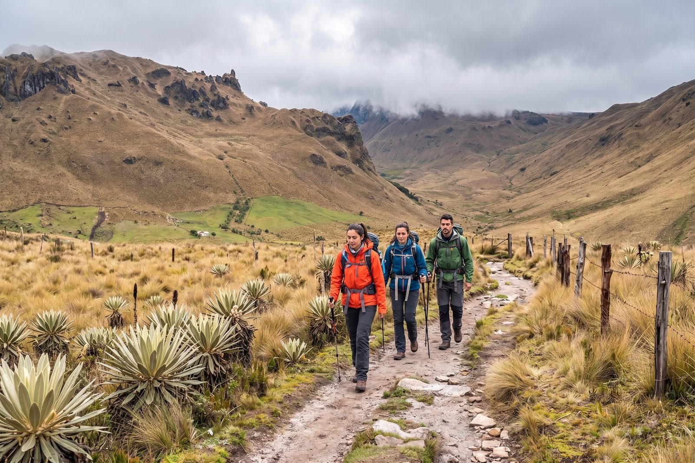
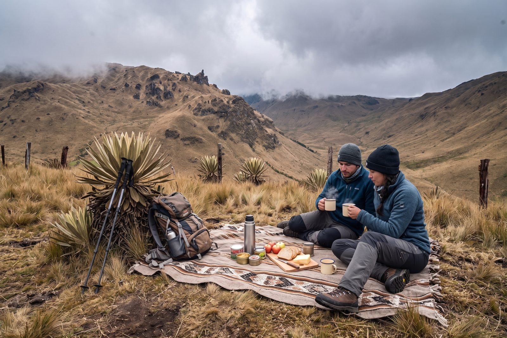
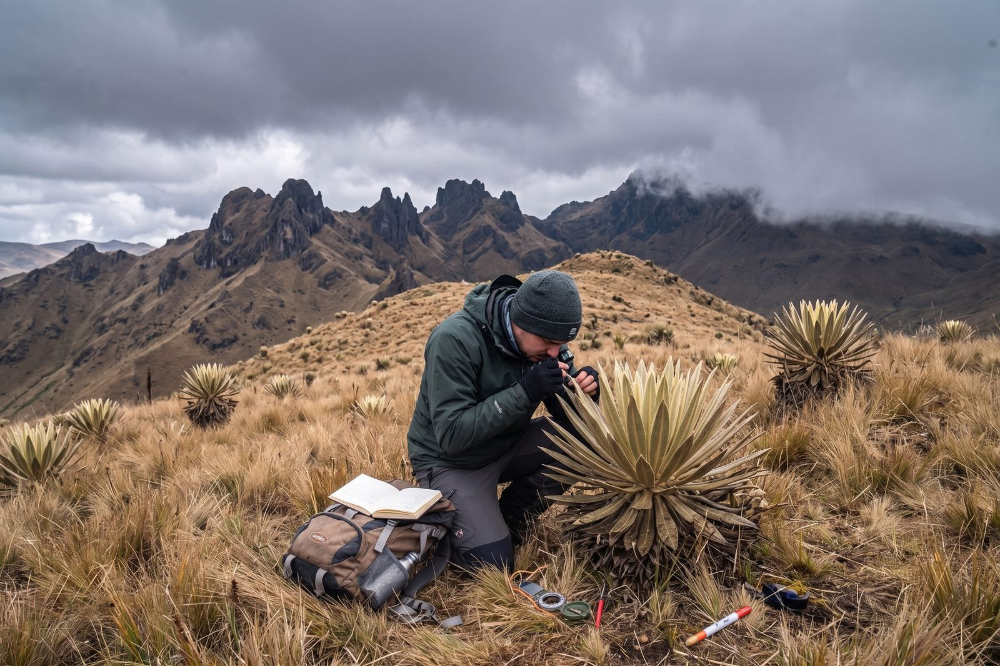
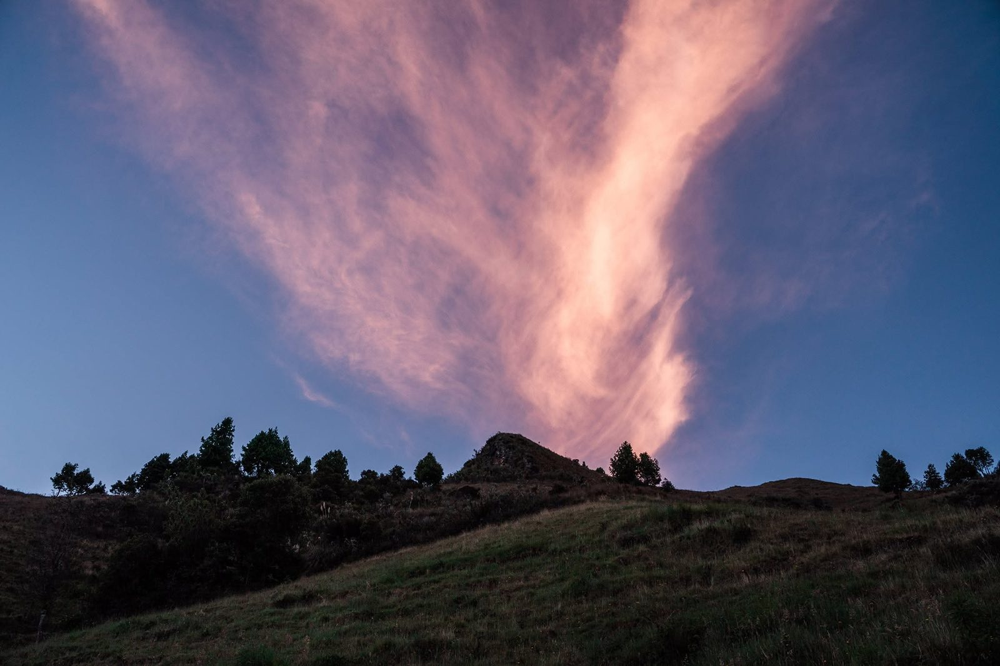
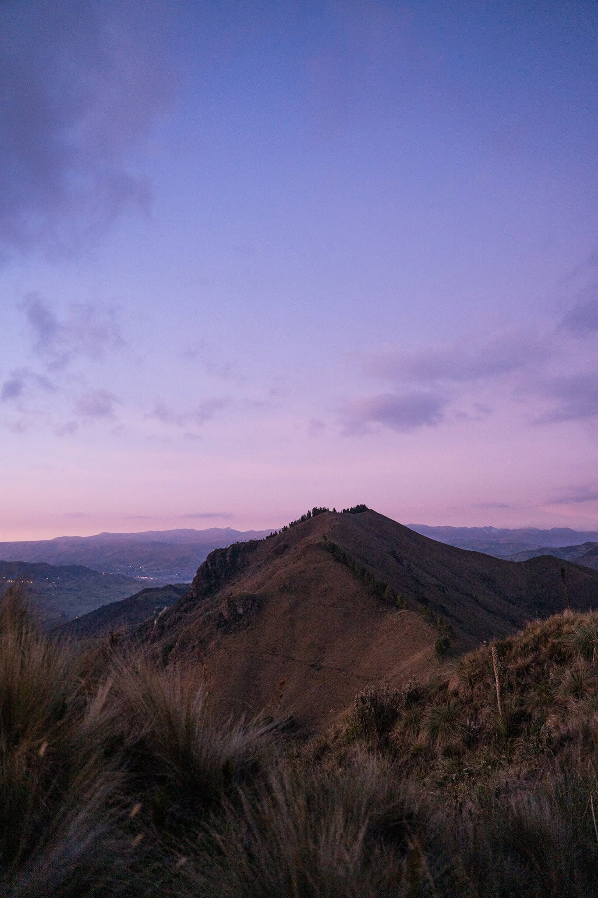
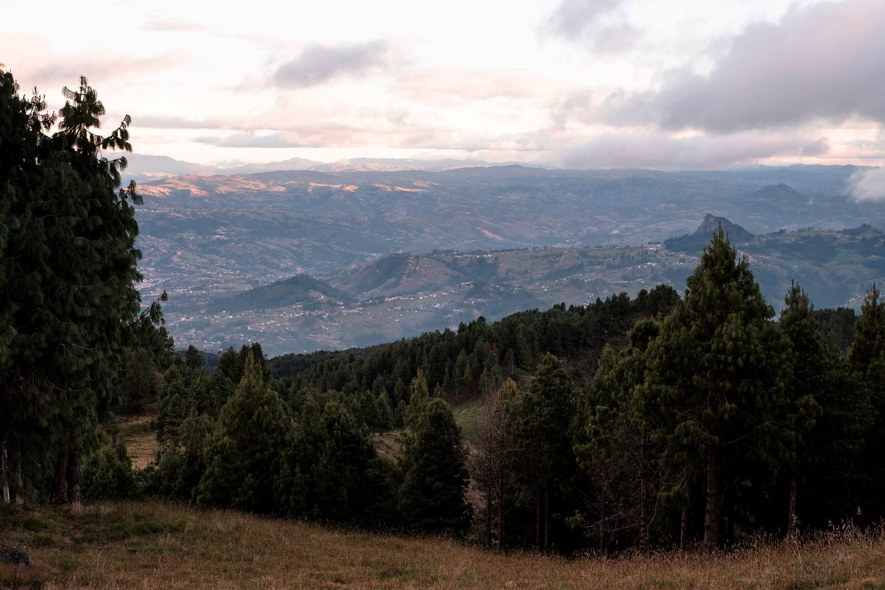
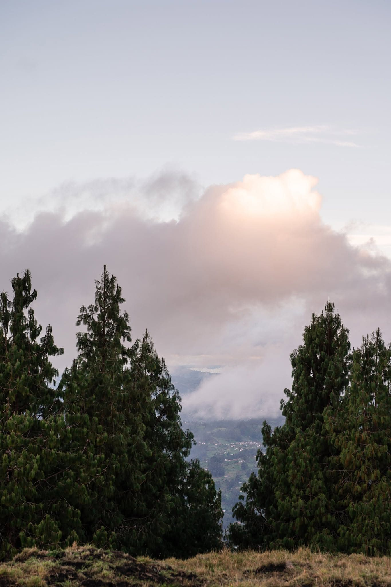
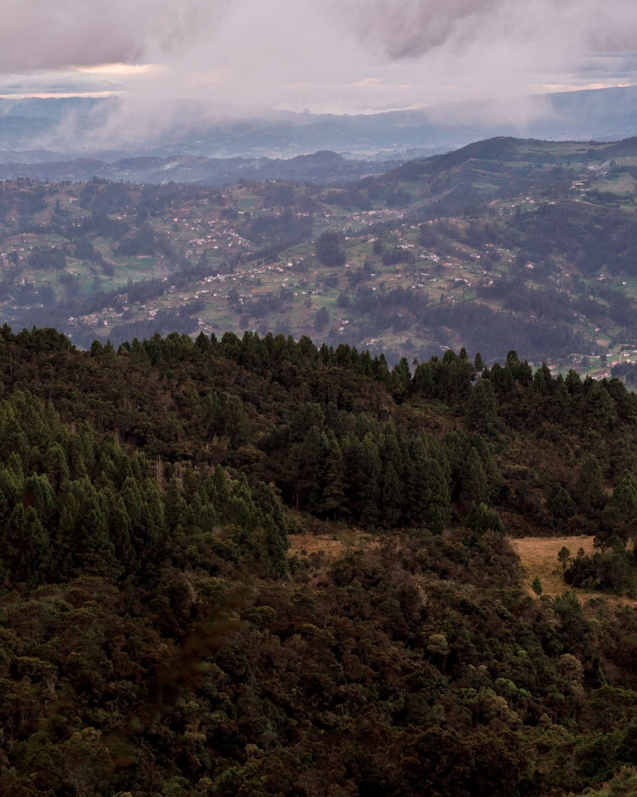
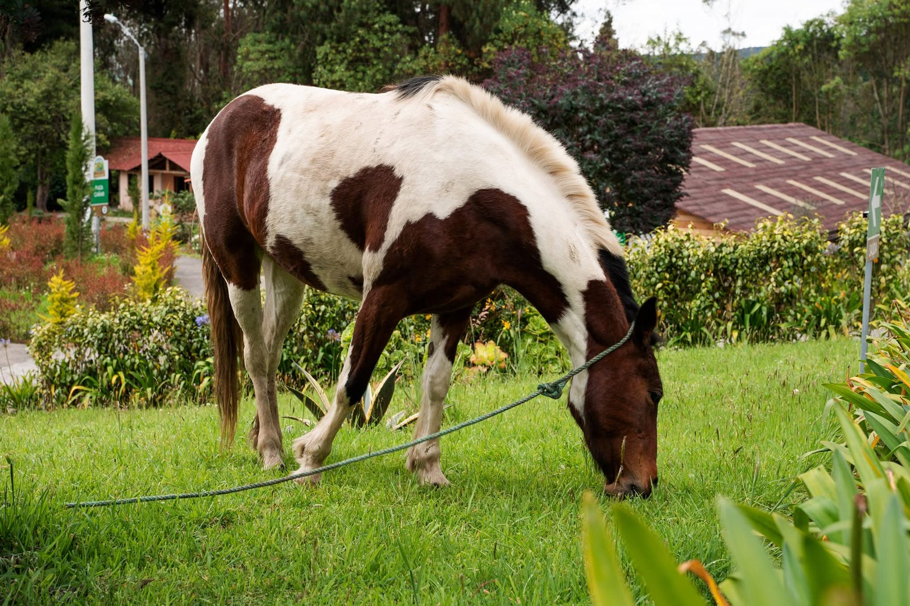
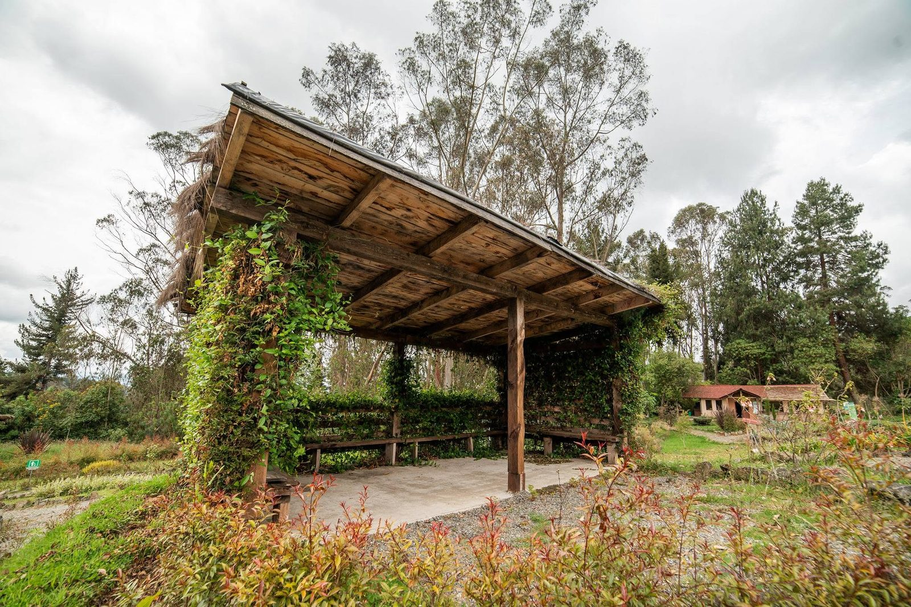